University of Science and Technology of China
2022 – 2027 (expected)
Ph.D. Candidate in Information and Communication Engineering (Advisor: Prof. Zhiwei Xiong)
National Scholarship; SZSE Scholarship
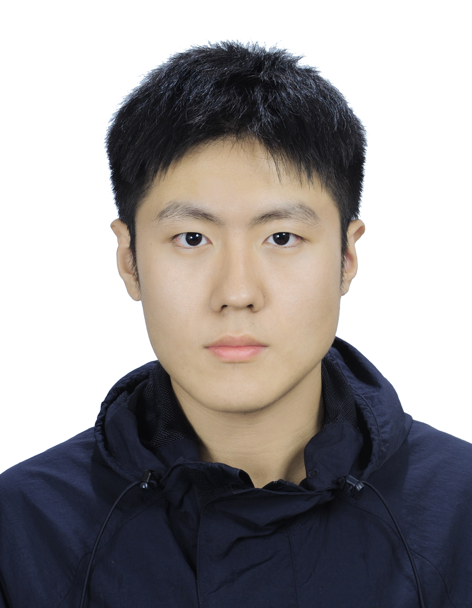
I am a Ph.D. candidate in Information and Communication Engineering at the University of Science and Technology of China, advised by Prof. Zhiwei Xiong. My research focuses on generative models for HDR imaging, efficient low-level vision systems, and multimodal video understanding.
I develop gain-map based diffusion and LUT architectures for HDR image/video generation and inverse tone mapping, spherical neural field diffusion for arbitrary-shaped image synthesis, and evidence-driven reasoning frameworks for long video understanding.
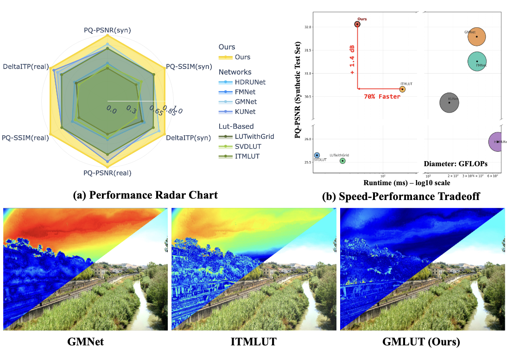
We introduce FastGaMer, a structured inverse tone mapping framework that reconstructs per-channel color gain maps to jointly restore compressed dynamic range and wide color gamut from locally tone-mapped SDR inputs. Local and global degradations are inverted separately via dynamic bilateral grids and learnable 3D LUTs, with all high-resolution operations being network-free. FastGaMer outperforms prior lightweight ITM methods by +1.4 dB PQ-PSNR while reducing runtime by 70%, processing 4K images in only 6.2 ms.
We propose RawMetaDiff, a generative diffusion framework for extreme low-light Raw image restoration from dual-exposure inputs guided by Raw metadata. Two complementary mechanisms—Meta-Assistant Color Transfer for global color consistency and Meta-Normed Cross Attention for robust cross-exposure correspondence—enable high-fidelity detail recovery and color preservation. Extensive experiments on both synthetic and a newly collected 1K real-world dual-exposure dataset demonstrate significant improvements over existing methods.
We propose Reflect-R1, the first evidence-driven self-correction framework for long video understanding that breaks the hallucination loop through dynamic visual evidence retrieval across a three-stage pipeline of intuition, verification, and arbitration. A stage-decoupled reinforcement learning algorithm (SD-GRPO) independently computes advantage functions across reasoning stages to resolve policy coupling. Experiments on VideoMME and LongVideoBench demonstrate state-of-the-art performance with significantly improved genuine rectification rates.
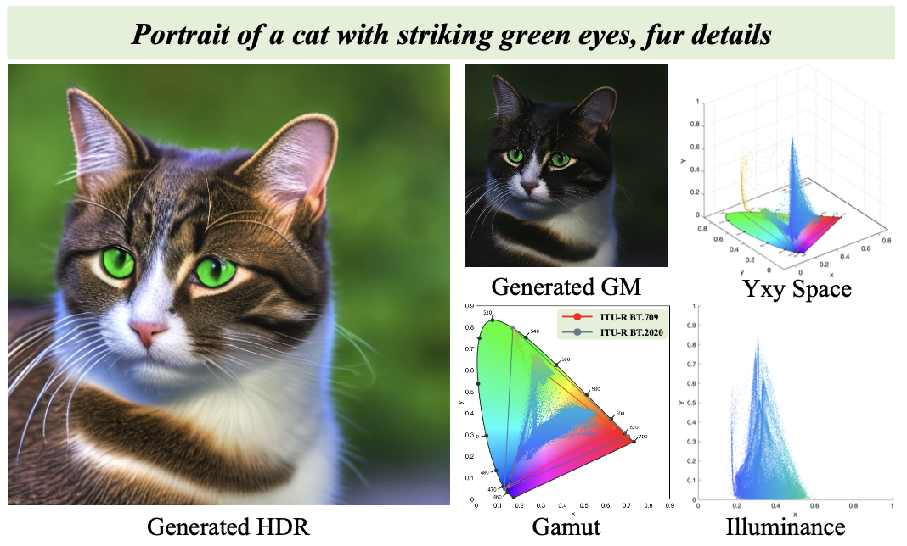
We introduce a gain-map decomposed diffusion pipeline that delivers the first text-to-HDR image generator, stays compatible with ControlNet and mainstream Stable Diffusion extensions, and scales SDR-to-HDR synthesis to native 4K resolution.
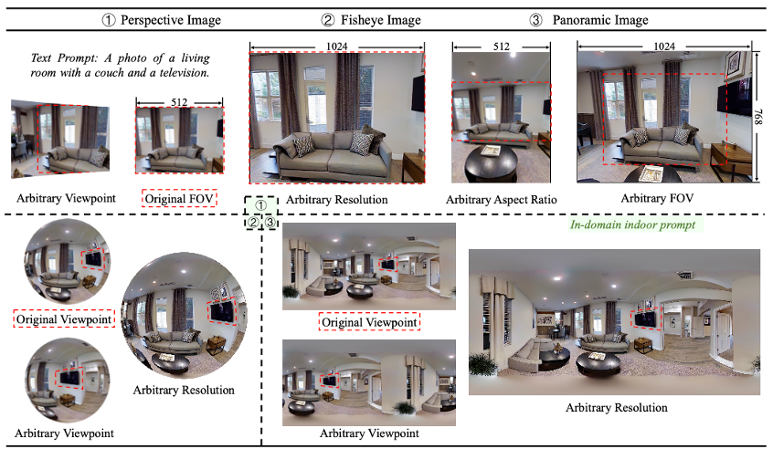
We perform diffusion over spherical neural fields with latent sampling, enabling explicit control over viewpoint, field of view, and output resolution to generate perspective, panoramic, and fisheye imagery with sharply improved texture detail and geometric consistency.
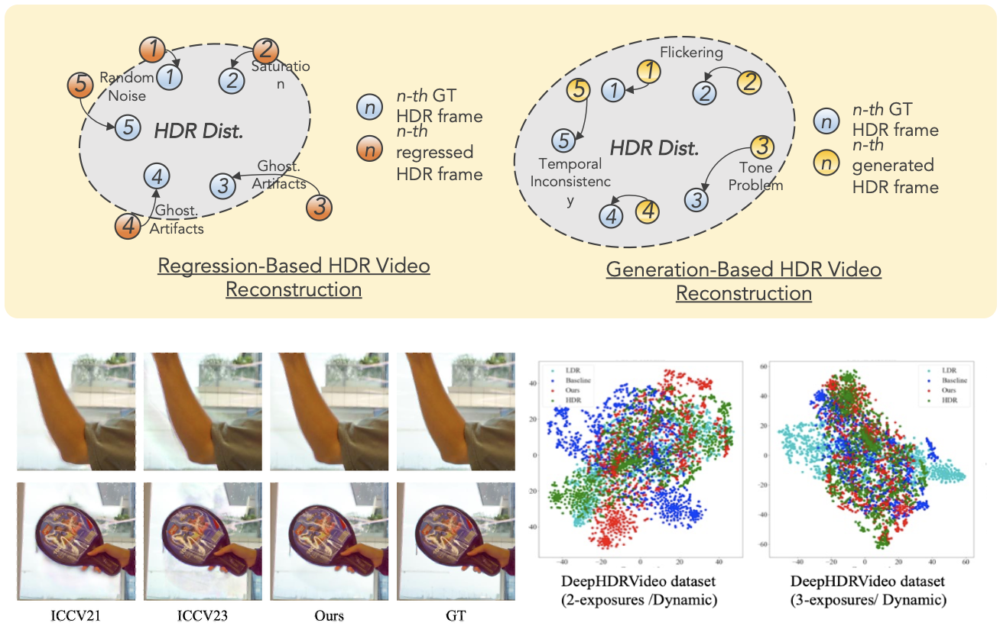
We investigate diffusion priors for HDR video reconstruction, treating noisy or motion-blurred frames as out-of-distribution samples for targeted refinement, and achieve up to 15% LPIPS improvements with cleaner temporal consistency.
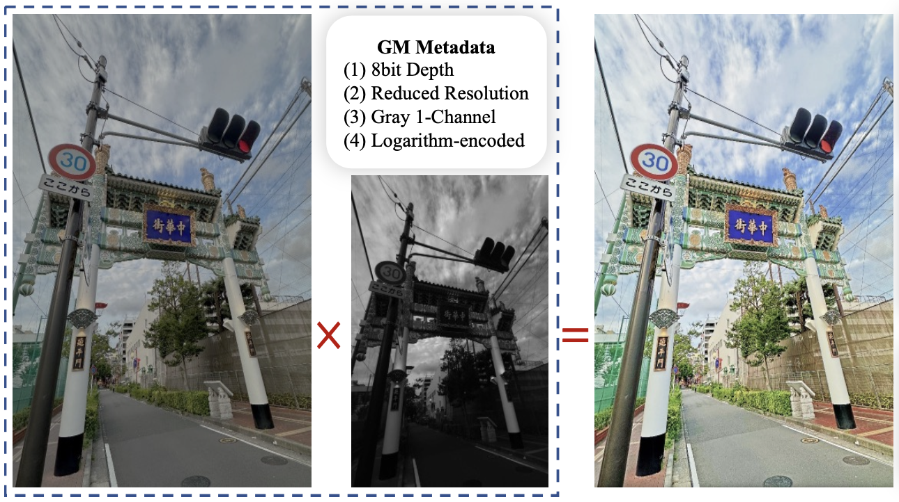
We present the first inverse tone mapping model that directly learns gain maps, together with synthetic and real benchmark datasets, demonstrating gains of up to 2.7 dB PSNR over previous inverse tone mapping networks.
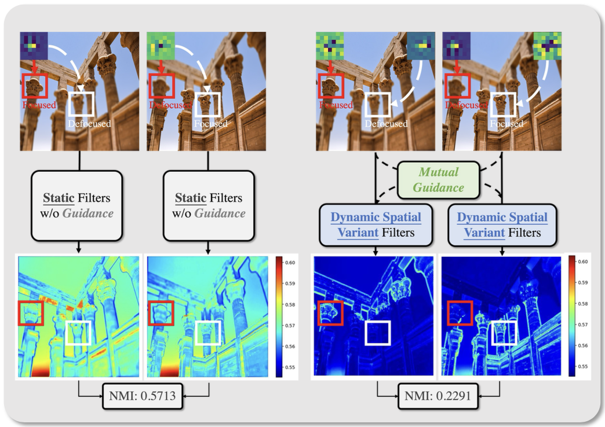
We couple dynamic convolution with a mutual-information alignment loss to build a unified image fusion framework, reaching state-of-the-art across seven benchmarks spanning multi-focus, multi-exposure, RGB-infrared, RGB-depth, and HDR de-ghosting tasks.
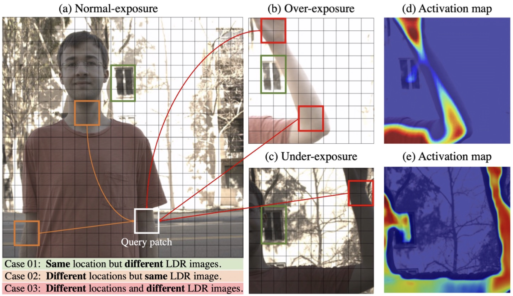
We use image gradients as illumination-invariant cues to guide transformer self-attention, making cross-exposure correspondence robust and ghost-free, and deliver state-of-the-art quantitative and perceptual HDR results on three public benchmarks.
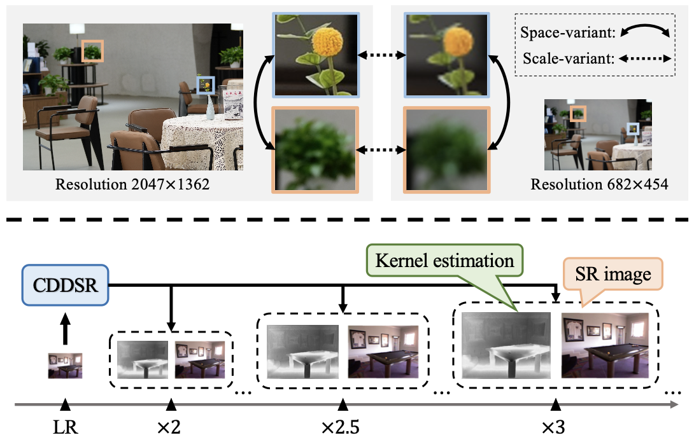
We model degradation as a continuous latent trajectory, allowing a single network to handle arbitrary upscaling factors while restoring sharp details under unknown blur and noise.
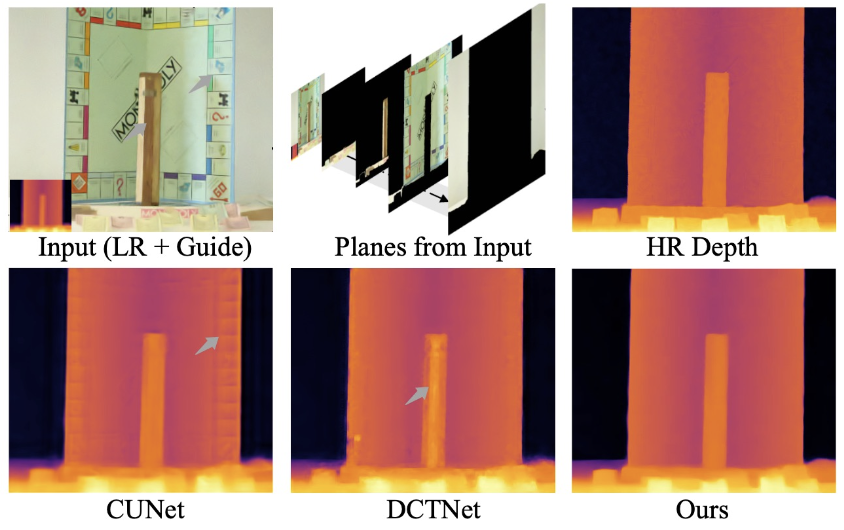
We learn piece-wise planar representations to guide depth super-resolution, preserving geometric boundaries and suppressing texture-copy artifacts in guided depth completion.
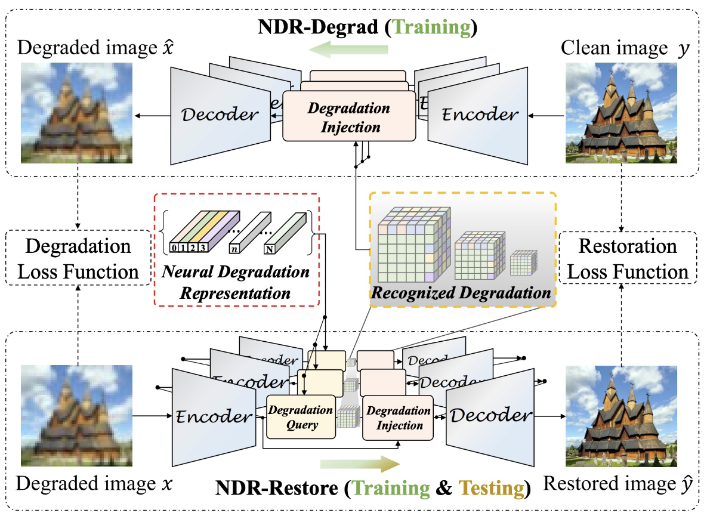
We train a shared degradation-aware prior for all-in-one image restoration, enabling a single model to adapt to diverse noise, blur, and compression scenarios with strong quantitative and visual quality.